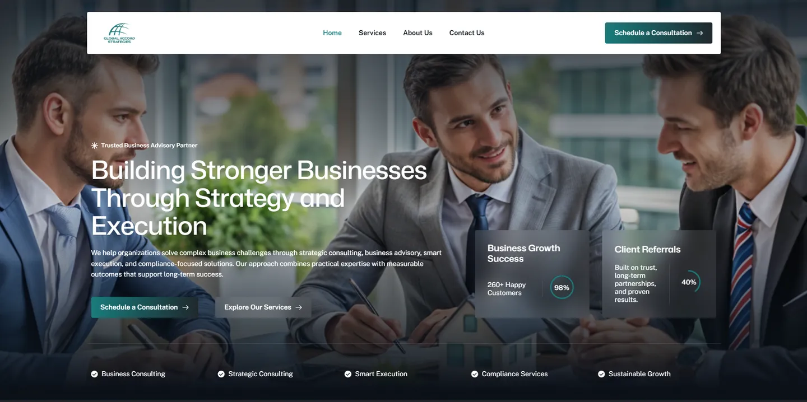
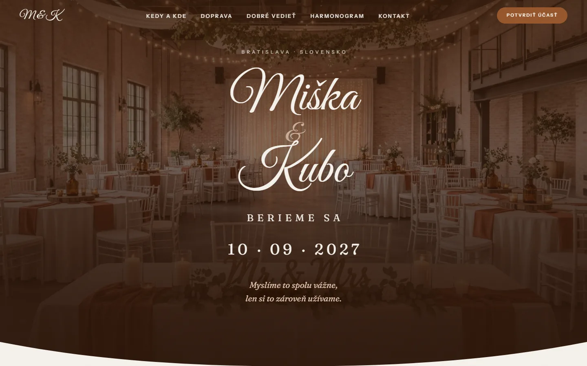
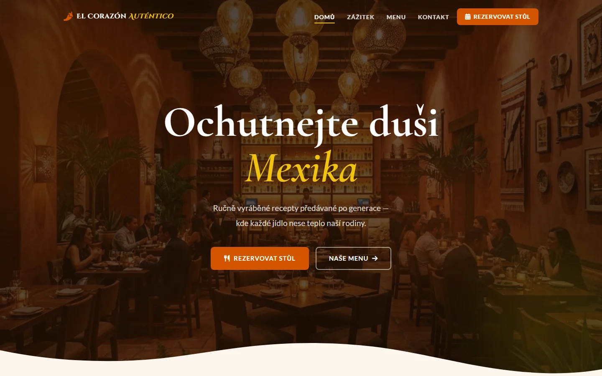
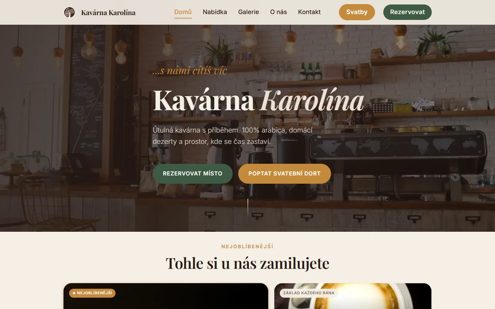
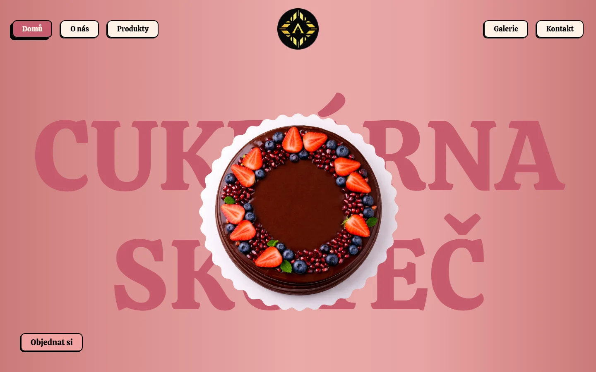
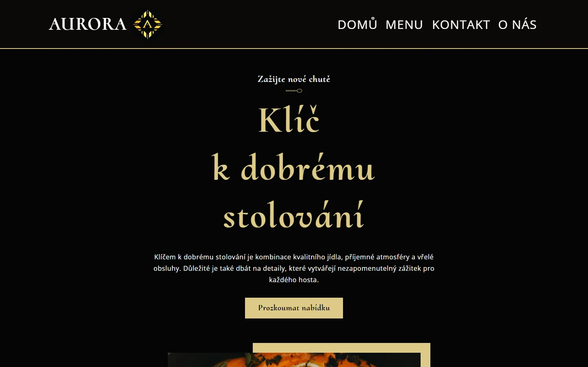

01

Svídnický extrém
Od nuly k webu za 18 dní. Závod, který žil jen na Facebooku, získal web s online registracemi.
Pozice 2,7 na Googlu za 3 měsíce
Případová studieWeby, které dnes běží naostro a slouží svým majitelům.
Od nuly k webu za 18 dní. Závod, který žil jen na Facebooku, získal web s online registracemi.
Pozice 2,7 na Googlu za 3 měsíce
Případová studie
Celý web na klíč. Devět stránek včetně textů, fotografií a právních stránek. Druhá zakázka od stejné klientky.
8 dní od zadání ke schválení
Případová studie
Web pro kavárnu, která ještě neexistovala. Dvojjazyčný, s obsahem psaným za pochodu.
Hotovo měsíc před otevřením
Případová studie
Klient nemusel řešit vůbec nic technického. Zastaralý web bez přístupů převzatý celý včetně domény a hostingu.
18 dní od poptávky ke spuštění
Případová studie
Nikdo nemusel obvolávat svatebčany. Web pro hosty v designu oznámení, formulář za celou rodinu a přehled, který se počítá sám.
30 formulářů a z nich hotové počty jídel
Případová studieVlastní cvičení a ukázky stylu. Nejsou to klientské zakázky, ale ukazují, jak přemýšlím o designu.

Web pro mexickou restauraci s výraznou atmosférou. Procvičil jsem si práci s barevností, prezentaci menu a budování silného vizuálního dojmu značky.
Přejít na stránku
Redesign konceptu kavárny. Cílem byl moderní, útulný vzhled a rychlé načítání i na pomalém připojení.
Přejít na stránku
Hravý a barevný web pro cukrárnu. Zaměřil jsem se na svěží vizuál, čitelnou prezentaci nabídky a přívětivý dojem, který láká na sladké.
Přejít na stránku
Koncept webu pro luxusní restauraci. Elegantní typografie, plynulé animace a atmosféra, která ladí s prémiovým gastro zážitkem.
Přejít na stránku